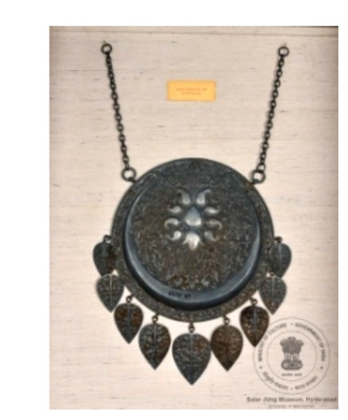

🔇 Is bhasha me is vastu ka audio abhi uplabdh nahi hai.
4. हाथी के मस्तक का आभूषण

अभिलेख संख्या: XLIV-69
यह टिक्का हाथी के मस्तक (माथे) का आभूषण है। यह एक गोलाकार चक्र है, जिस पर उभरा हुआ अर्धचंद्र बना है और उसके नीचे पुष्पलता (फूलों की बेल) की आकृति उकेरी गई है। इसी प्रकार की लता का विस्तार पूरे सतह पर किया गया है। किनारे के आधे भाग में 9 पत्तीनुमा लटकन लगे हैं। शेष आधे भाग में दो ज़ंजीरें हैं, जिनके सिरे पर डोरी से बाँधने के लिए छल्ले बने हैं। सामान्यतः टिक्का एक ऐसा गहना है जो बालों की मांग के मध्य भाग में पहना जाता है और माथे तक आता है। यह विभिन्न सांस्कृतिक और धार्मिक परंपराओं में प्रचलित है। इसका वज़न 4510 ग्राम है। वेदों के अनुसार, माथे का मध्य भाग तीसरी आँख का स्थान है, जो गुप्त ज्ञान का आसन माना जाता है। यह आभूषण भारत में उत्पन्न हुआ और इसका निर्माण 20वीं शताब्दी के मध्य काल का माना जाता है।
4. हाथी के मस्तक का आभूषण
अभिलेख संख्या: XLIV-69
यह टिक्का हाथी के मस्तक (माथे) का आभूषण है। यह एक गोलाकार चक्र है, जिस पर उभरा हुआ अर्धचंद्र बना है और उसके नीचे पुष्पलता (फूलों की बेल) की आकृति उकेरी गई है। इसी प्रकार की लता का विस्तार पूरे सतह पर किया गया है। किनारे के आधे भाग में 9 पत्तीनुमा लटकन लगे हैं। शेष आधे भाग में दो ज़ंजीरें हैं, जिनके सिरे पर डोरी से बाँधने के लिए छल्ले बने हैं। सामान्यतः टिक्का एक ऐसा गहना है जो बालों की मांग के मध्य भाग में पहना जाता है और माथे तक आता है। यह विभिन्न सांस्कृतिक और धार्मिक परंपराओं में प्रचलित है। इसका वज़न 4510 ग्राम है। वेदों के अनुसार, माथे का मध्य भाग तीसरी आँख का स्थान है, जो गुप्त ज्ञान का आसन माना जाता है। यह आभूषण भारत में उत्पन्न हुआ और इसका निर्माण 20वीं शताब्दी के मध्य काल का माना जाता है।
4. ఏనుగు నుదుటి ఆభరణం
Acc No: XLIV-69
ఇది ఏనుగు నుదుటి ఆభరణం లేదా టిక్కా 20వ శతాబ్దం మధ్య భాగం నాటి భారతదేశం నుండి వచ్చిన కళాఖండం. ఈ ఆభరణం 4510 గ్రాముల బరువు కలిగి ఉంది. ఇది గుండ్రటి పలక రూపంలో ఉండి, దానిపై ఉబ్బెత్తుగా చెక్కబడిన చంద్రవంక మరియు దాని కింద పూల లత కనిపిస్తున్నాయి. ఇటువంటి లత డిజైన్ ఈ పలక ఉపరితలం అంతటా విస్తరించింది. దీని అంచు లో సగం పొడవున తొమ్మిది ఆకు ఆకారపు పెండెంట్లు వేలాడుతున్నాయి. మిగిలిన సగం భాగంలో రెండు గొలుసులు ఉన్నాయి, వీటి చివర దారంతో కట్టడానికి ఒక రింగ్ అమర్చబడింది. వేదాల ప్రకారం, నుదుటి మధ్య భాగం మూడవ కన్ను అంటే దాగి ఉన్న జ్ఞానానికి నిలయం. సాధారణంగా, టిక్కా అనేది జుట్టు మధ్యలో ధరించి, నుదుటి వరకు వేలాడే ఆభరణం.
۴. ہاتھی کے ماتھے کا زیور
Acc No: XLIV-69
یہ ٹیکا ہاتھی کی پیشانی پر آراستہ کیا جانے والا زیور ہے، جو گول ڈسک(تھالی) کی شکل میں ہے۔ جس پر ابھار دار ہلال نقش کیا گیا ہے اور اس کے نیچے پھولدار بیل کا دلکش نمونہ نمایاں ہے۔ اس جیسی بیلیں تمام سطح پر بڑے پیمانے پر بنائی گئی ہیں۔ ڈسک کے کنارے کے نصف حصے میں نو پنکھڑی نما لاکٹ لٹکے ہوئے ہیں۔ باقی نصف حصے میں دو زنجیریں ہیں جن کے آخر میں زنجیریں لگی ہیں تاکہ دھاگے کے ساتھ باندھا جا سکے۔عمومی طور پر ٹیکا زیور کی ایک قسم ہے، جو بالوں کے درمیان والے حصے میں پہنا جاتا ہے اور ماتھے تک پھیلا ہوتا ہے۔ اسے مختلف ثقافتی اور مذہبی مواقع پر استعمال کیا جاتا ہے۔اس کا وزن 4510 گرام ہے۔ ویدوں کے مطابق، ماتھے کا وسطی حصہ کا مقام سمجھا جاتا ہے ، جو باطنی بصیرت اور پوشیدہ حکمت کی علامت ہے۔ یہ ہندوستان سے تعلق رکھتا ہے اور بیسویں صدی کے وسط کا ہے۔
৪. হাতির কপালে পড়ার অলঙ্কার
Acc No: XLIV-69
এই টিক্কাটি হলো হাতির কপালে পরার একটি অলঙ্কার। এটি একটি বৃত্তাকার চাকতি যেখানে একটি উদীয়মান অর্ধচন্দ্র খোদাই করা আছে এবং তার নিচে ফুলের লতার নকশা রয়েছে। এর উপরিভাগ জুড়ে একই ধরনের লতার নকশা বিস্তৃতভাবে ফুটিয়ে তোলা হয়েছে। এর প্রান্তের অর্ধেক অংশ জুড়ে ৯টি পাতা আকৃতির দুল বা পেন্ডেন্ট রয়েছে। বাকি অর্ধেক অংশে দুটি শিকল বা চেইন আছে, যার শেষ প্রান্তে সুতো দিয়ে বাঁধার জন্য আংটা বা রিং রয়েছে। সাধারণভাবে 'টিক্কা' হলো অলঙ্কারের একটি অংশ, যা চুলের মাঝখানে সিঁথিতে পরা হয় এবং কপাল পর্যন্ত বিস্তৃত থাকে। এটি প্রায়শই বিভিন্ন সাংস্কৃতিক ও ধর্মীয় প্রেক্ষাপটে দেখা যায়। এটির ওজন ৪৫১০ গ্রাম। বেদ অনুসারে, কপালের কেন্দ্রস্থল হলো 'তৃতীয় নয়ন'-এর স্থান, যা সুপ্ত বা গুপ্ত জ্ঞানের আধার। এটির নির্মাণস্থল হলো ভারত এবং এটি ২০শ শতাব্দীর মধ্যভাগে নির্মিত।
4. હાથીના મસ્તક પરનું આભૂષણ- ટીક્કો
Acc No: XLIV-69
આ ટિક્કો હાથીના કપાળ પર ધારણ કરાતું આભૂષણ છે. તે ગોળ આકારની થાળી જેવું છે, જેમાં અર્ધચંદ્રાકાર ઊભરેલી આકૃતિ અને તેના નીચે ફૂલ-લતાવાળી નકશી કોતરાયેલ છે. આવી જ લતા જેવી ભાત આખી સપાટી પર વિશાળરૂપે દેખાય છે. કિનારાના અડધા ભાગમાં નવ પાનાકાર લટકણાં (પેન્ડન્ટ્સ) જોડાયેલાં છે. બાકીના અડધા ભાગમાં બે સાંકળો જોડાયેલી છે, જેમના છેડે દોરાથી બાંધવા માટે વલય (રિંગ) છે. સામાન્ય રીતે ટિક્કો એ માથાના મધ્ય ભાગની વાંસળી (પાર્ટિંગ)માં પહેરાતું આભૂષણ છે, જે કપાળ સુધી વિસ્તરે છે. આ આભૂષણ ભારતીય સંસ્કૃતિ અને ધાર્મિક પરંપરાઓમાં વિશેષ મહત્વ ધરાવે છે. આ ટિક્કાનું વજન અંદાજે 4510 ગ્રામ છે. વૈદિક પરંપરાઓ અનુસાર કપાળનો મધ્ય ભાગ “ત્રીજું નેત્ર” કહેવાય છે — જે ગુપ્ત જ્ઞાન અને અંતર્દષ્ટિનું સ્થાન માનવામાં આવે છે. આ ટિક્કાનું મૂળ ભારત સાથે જોડાયેલું છે અને તેનું નિર્માણ 20મી સદીના મધ્યકાળમાં થયેલું માનવામાં આવે છે.
4. ಫೋರ್ಹೆಡ್ ಆರ್ನಮೆಂಟ್ ಫಾರ್ ಎಲಿಫೆಂಟ್
Acc No: XLIV-69
ಈ 'ಟಿಕ್ಕಾ' ಆನೆಯ ಹಣೆಗೆ ಧರಿಸುವ ಆಭರಣದ ಕಲಾಕೃತಿಯಾಗಿದೆ. ವೃತ್ತಾಕಾರದ ಫಲಕವನ್ನು ಹೊಂದಿರುವ ಇದರಲ್ಲಿ, ಉಬ್ಬು ಕೆತ್ತನೆಯ ಅರ್ಧಚಂದ್ರಾಕೃತಿ ಹಾಗೂ ಅದರ ಕೆಳಗೆ ಹೂವಿನ ಬಳ್ಳಿಯ ವಿನ್ಯಾಸವಿದೆ. ಇದೇ ರೀತಿಯ ಬಳ್ಳಿಯ ವಿನ್ಯಾಸವನ್ನು ಇದರ ಮೇಲ್ಮೈಯಾದ್ಯಂತ ದೊಡ್ಡದಾಗಿ ಮೂಡಿಸಲಾಗಿದೆ. ಇದರ ಅಂಚಿನ ಒಂದು ಅರ್ಧಭಾಗದಲ್ಲಿ ಎಲೆಯಾಕಾರದ 9 ಪೆಂಡೆಂಟ್ಗಳು ನೇತಾಡುತ್ತಿವೆ. ಉಳಿದ ಅರ್ಧಭಾಗದಲ್ಲಿ ಎರಡು ಸರಪಳಿಗಳಿದ್ದು , ದಾರದಿಂದ ಕಟ್ಟಲು ಅನುಕೂಲವಾಗುವಂತೆ ಅವುಗಳ ತುದಿಯಲ್ಲಿ ಉಂಗುರಗಳನ್ನು ಅಳವಡಿಸಲಾಗಿದೆ. ಸಾಮಾನ್ಯವಾಗಿ 'ಟಿಕ್ಕಾ' ಎಂದರೆ ಕೂದಲಿನ ಮಧ್ಯಭಾಗದ ಪಾಪಿಟಿನಲ್ಲಿ ಧರಿಸಿ ಹಣೆಯವರೆಗೆ ಬರುವಂತೆ ಹಾಕಿಕೊಳ್ಳುವ ಒಂದು ಆಭರಣ. ಇದನ್ನು ವಿವಿಧ ಸಾಂಸ್ಕೃತಿಕ ಮತ್ತು ಧಾರ್ಮಿಕ ಹಿನ್ನೆಲೆಗಳಲ್ಲಿ ಹೆಚ್ಚಾಗಿ ಕಾಣಬಹುದು. ಈ ಭವ್ಯವಾದ ಕಲಾಕೃತಿಯು 4510 ಗ್ರಾಂ ತೂಕವನ್ನು ಹೊಂದಿದೆ. ವೇದಗಳ ಪ್ರಕಾರ, ಹಣೆಯ ಮಧ್ಯಭಾಗವು ಮೂರನೇ ಕಣ್ಣಿನ ನೆಲೆಬೀಡಾಗಿದ್ದು, ಇದು ಗುಪ್ತ ಜ್ಞಾನದ ಸ್ಥಾನವಾಗಿದೆ. ಭಾರತದಲ್ಲಿಯೇ ರೂಪುಗೊಂಡಿರುವ ಈ ಅದ್ಭುತ ಕಲಾಕೃತಿಯು 20ನೇ ಶತಮಾನದ ಮಧ್ಯಭಾಗಕ್ಕೆ ಸೇರಿದೆ.
୪. ହାତୀ ପାଇଁ କପାଳ ଅଳଙ୍କାର
Acc No: XLIV-69
ଏହି ମଥା ଟିକ୍କାଟି ହାତୀର କପାଳରେ ପିନ୍ଧିବା ନିମନ୍ତେ ନିର୍ମିତ ହୋଇଥିଲା, ଏହାର ମଧ୍ୟ ଭାଗଟି ବୃତ୍ତାକାର, ଯେଉଁଥିରେ ଗୋଟିଏ ଅର୍ଦ୍ଧ ଚନ୍ଦ୍ର ତଳେ ଫୁଲ ମାନଙ୍କର ଏକ ଲତା ରହିଛି। ସମାନ ଲତା ସମଗ୍ର ପୃଷ୍ଠ ଭାଗରେ ବିସ୍ତୃତ ହୋଇଛି। ଅଳଙ୍କାରର ନିମ୍ନ ଭାଗରେ ନଅଟି ପତ୍ର ଆକାରର ପେଣ୍ଡେଣ୍ଟ୍ ଝୁଲୁ ଅଛି। ଅନ୍ୟ ଅଧା ଭାଗରେ ଦୁଇଟି ଚେନ୍ ଲାଗିଛି ଯାହାର ଶେଷରେ ସୂତା ବାନ୍ଧିବା ପାଇଁ ହୁକ କରାଯାଇଛି। ସାଧାରଣତଃ, ଟିକ୍କା ହେଉଛି କେଶର ମଝିରେ ପିନ୍ଧାଯାଉଥିବା ଗୋଟିଏ ଅଳଙ୍କାର, ଯାହା କପାଳ ପର୍ଯ୍ୟନ୍ତ ବିସ୍ତୃତ ହୋଇଥାଏ, ଏବଂ ପ୍ରାୟତଃ ବିଭିନ୍ନ ସାଂସ୍କୃତିକ ଓ ଧାର୍ମିକ ପର୍ବପର୍ବାଣୀରେ ଭାରତୀୟ ମହିଳାମାନେ ଏହାକୁ ପରିଧାନ କରିଥିବାର ଦେଖାଯାଏ। ଏହାର ଓଜନ 4510 ଗ୍ରାମ ଅଟେ। ବେଦ ଅନୁସାରେ, କପାଳର କେନ୍ଦ୍ର ହେଉଛି ତୃତୀୟ ନେତ୍ରର ସ୍ଥାନ ଯେଉଁଠାରେ ଗୁପ୍ତ ଜ୍ଞାନ ପ୍ରଚ୍ଛଦ ଅବସ୍ଥାରେ ରହିଥାଏ। ଏହା ଭାରତରେ ନିର୍ମିତ ହୋଇଥିଲା ଏବଂ ଏହାର ଇତିହାସ ବିଂଶ ଶତାବ୍ଦୀର ମଧ୍ୟଭାଗରୁ ଆରମ୍ଭ ହୋଇଛି।
4. हाथी के मस्तक का आभूषण
अभिलेख संख्या: XLIV-69
यह टिक्का हाथी के मस्तक (माथे) का आभूषण है। यह एक गोलाकार चक्र है, जिस पर उभरा हुआ अर्धचंद्र बना है और उसके नीचे पुष्पलता (फूलों की बेल) की आकृति उकेरी गई है। इसी प्रकार की लता का विस्तार पूरे सतह पर किया गया है। किनारे के आधे भाग में 9 पत्तीनुमा लटकन लगे हैं। शेष आधे भाग में दो ज़ंजीरें हैं, जिनके सिरे पर डोरी से बाँधने के लिए छल्ले बने हैं। सामान्यतः टिक्का एक ऐसा गहना है जो बालों की मांग के मध्य भाग में पहना जाता है और माथे तक आता है। यह विभिन्न सांस्कृतिक और धार्मिक परंपराओं में प्रचलित है। इसका वज़न 4510 ग्राम है। वेदों के अनुसार, माथे का मध्य भाग तीसरी आँख का स्थान है, जो गुप्त ज्ञान का आसन माना जाता है। यह आभूषण भारत में उत्पन्न हुआ और इसका निर्माण 20वीं शताब्दी के मध्य काल का माना जाता है।
4. ആനയ്ക്കായുള്ള നെറ്റിപ്പട്ടം
Acc No: XLIV-69
ഗജവീരന്മാരുടെ മസ്തകത്തെ അലങ്കരിക്കുന്ന ഈ നെറ്റിപ്പട്ടം, പൂക്കളുടെയും വള്ളികളുടെയും മാതൃകകൾക്ക് താഴെയായി അർദ്ധചന്ദ്രനെ കൊത്തിവെച്ച വൃത്താകൃതിയിലുള്ള ഒരു താലമാണ്. ഉപരിതലത്തിലുടനീളം വള്ളിപ്പടർപ്പുകളുടെ മനോഹരമായ വലിയ മാതൃകകൾ കാണാം. ഇതിൻ്റെ വശങ്ങളിൽ പകുതിയോളം ഭാഗത്തായി ഇലകളുടെ ആകൃതിയിലുള്ള ഒൻപത് തൂക്കുപതക്കങ്ങൾ ഘടിപ്പിച്ചിരിക്കുന്നു. ബാക്കി പകുതി ഭാഗത്ത്, ചരട് കൊണ്ട് ബന്ധിപ്പിക്കാനായി അറ്റത്ത് വളയങ്ങളോടു കൂടിയ രണ്ട് ചങ്ങലകൾ ഘടിപ്പിച്ചിട്ടുണ്ട്. സാധാരണയായി നെറ്റിയുടെ മധ്യഭാഗത്ത് അണിയുന്ന ഒരു ആഭരണമാണ് 'നെറ്റിപ്പട്ടം'. 4510 ഗ്രാം തൂക്കമാണ് ഇതിനുള്ളത്. വേദങ്ങൾ അനുസരിച്ച്, നെറ്റിയുടെ മധ്യഭാഗം 'തൃക്കണ്ണിൻ്റെ' സ്ഥാനവും നിഗൂഢമായ ജ്ഞാനത്തിൻ്റെ ഉറവിടവുമാണ്. ഭാരതത്തിൽ ഉത്ഭവിച്ച ഈ ആഭരണം ഇരുപതാം നൂറ്റാണ്ടിൻ്റെ മധ്യകാലഘട്ടത്തിലേതാണ്.